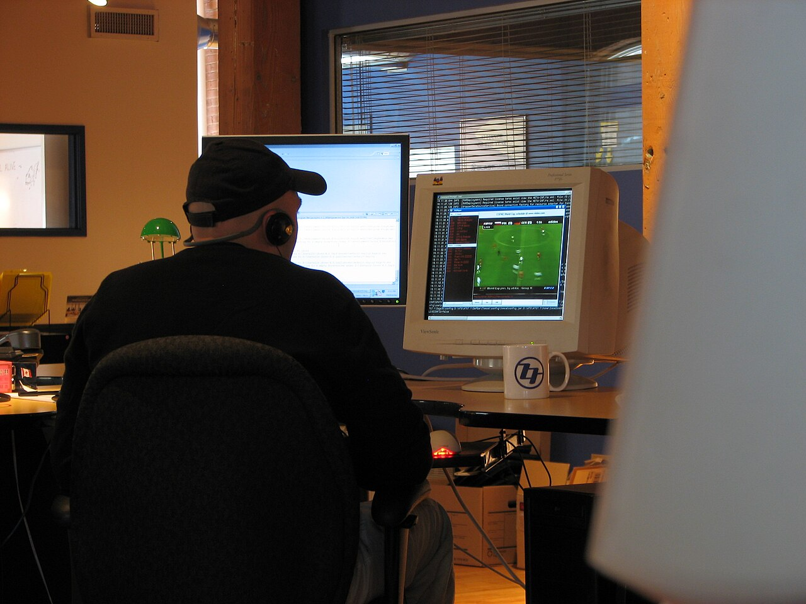

Bir vaqtda bir nechta ish: multitasking afsonasi
Dars qilib, telefonda yozishib, video ham ko'rish — vaqtni tejaydigandek tuyuladi. Aslida miya bunday ishlamaydi.

Ko'pchilik o'zini “multitasker” deb hisoblaydi: inshoni yozib turib, Telegramga javob beradi, fonda esa YouTube ochiq. Lekin psixologlar uzoq vaqtdan beri bir narsani ta'kidlaydi: murakkab ishlarda miya ikki vazifani aynan bir vaqtda bajarmaydi. U ular orasida tez almashadi — va har bir almashish “narx”ga ega.
Almashish narxi
2001-yilda Joshua Rubinshteyn, Devid Meyer va Devid Evans tajriba o'tkazishdi: ishtirokchilar matematik masalalar va geometrik shakllarni saralash kabi vazifalar orasida almashib ishlashdi. Natija aniq edi — har safar vazifa almashganda vaqt yo'qotildi, vazifa qanchalik murakkab va notanish bo'lsa, yo'qotish shunchalik katta bo'ldi.
Amerika Psixologiya Assotsiatsiyasi (APA) tushuntirishicha, bitta almashish bir necha o'ndan bir soniya olishi mumkin. Bu oz tuyuladi — lekin bir soatda o'nlab marta telefonga qarasangiz, bu soniyalar daqiqalarga, daqiqalar esa soatlarga aylanadi.

Ikki ishni “birga” qilish — aslida ikkalasini ham yarim kuch bilan qilish.
Miyada nima bo'ladi?
Tadqiqotchilar almashishni ikki bosqichga ajratadi: avval miya maqsadni o'zgartiradi (“endi matematika emas, xabar yozaman”), keyin yangi vazifa qoidalarini “yuklaydi”. Har safar shu ikki bosqich qaytadan bajariladi. Shuning uchun aralash ishlash ko'proq xato va ko'proq charchoq olib keladi.
Nima qilish kerak?
- Bir vaqtda bitta vazifa. Ishni tugatib, keyin keyingisiga o'ting.
- Xabarlarni guruhlang. Telegramni har 5 daqiqada emas, soatda bir marta tekshiring.
- Bildirishnomalarni o'chiring. O'qish paytida “Bezovta qilmang” rejimi.
- Tanaffusni rejalang. 25 daqiqa ish — 5 daqiqa dam: telefonni shu 5 daqiqaga qoldiring.
Insho yozish yoki SAT matematikasi kabi chuqur ish uchun eng yaxshi strategiya oddiy: bitta oyna, bitta vazifa, telefon esa boshqa xonada.
Manba: Rubinstein, Meyer & Evans, “Executive Control of Cognitive Processes in Task Switching”, Journal of Experimental Psychology: HPP, 2001; APA: Multitasking. Matn — o'zbek tilidagi erkin qisqacha bayon.